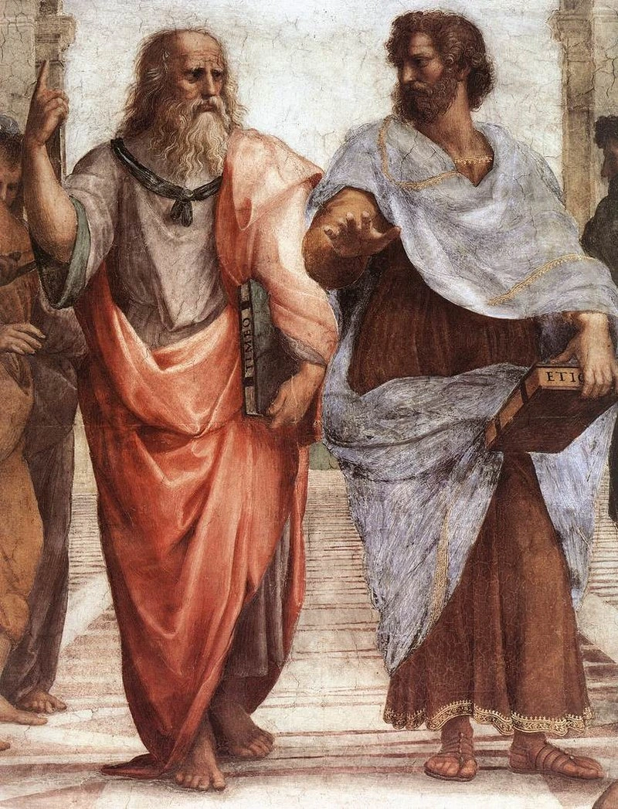

Conhecimento
Conhecimento Folosófico:
O Conhecimento filosófico tem como significado o conhecimento que se baseia no pensamento e na construção de ideias e conceitos, por intermédio do raciocínio, objetivando o saber.
Filosofia
Fonte: Toda Matéria
O significado de conhecimento filosófico apareceu a partir da capacidade que o ser humano possui de refletir especialmente sobre as questões imateriais e extremamente sensíveis, como é o caso dos conceitos e das ideias. É muito comum na Filosofia, que se baseia mais na reflexão e na observação para fazer apontamentos sobre a humanidade e suas formas de viver.
Platão e Aristóteles
Fonte: O Córdice
O conhecimento filosófico isenta qualquer necessidade de verificação científica, mesmo sendo racional. Isso ocorre porque seus meios de estudo não têm caráter material, isso é, são meramente subjetivos e decorrem de algo mais geral e menos preciso.
Sócrates
Fonte: Brasil Escola
Nesse sentido, a principal preocupação contida na Filosofia é o questionamento com o objetivo de buscar respostas razoáveis para determinadas perguntas, mas que não haja necessariamente a obrigação de comprovar alguma coisa. Por conta desse pressuposto, é possível sentenciar que este seja uma forma de conhecimento especulativo.
Filósofos
Fonte: Toda Matéria
Características do conhecimento filosófico:
Entre as características mais comuns do conhecimento filosófico temos:
Sistemático: crê que o alicerce para a resolução dos problemas ocorra a partir
da reflexão sobre as questões realmente importantes;
Elucidativo: busca a compreensão dos pensamentos, dos conceitos, dos problemas e das demais circunstâncias da vida humana que são consideradas impossíveis de serem percebidas e desvendadas de forma científica;
Crítico: nessa concepção, toda e qualquer informação deve ser analisada e refletida antes de ser levada em consideração pelos filósofos;
Especulativo: aqui as conclusões se baseiam em hipóteses, muito por conta da utilização de teorias abstratas para a compreensão do fenômeno.
Aristóteles
Fonte: Mundo Educação